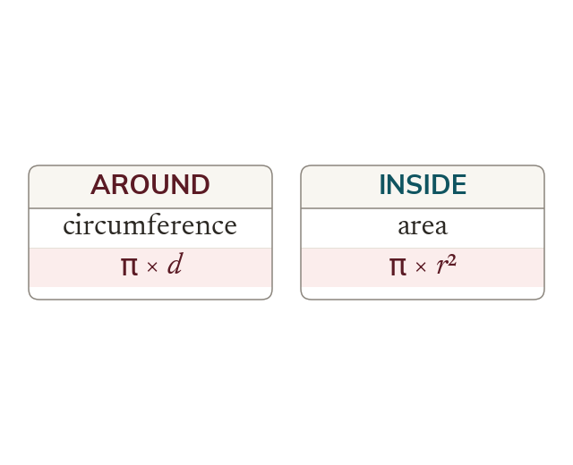

One constant, two formulas
Every circle's circumference ÷ diameter is the same number, π. Circumference is π × d. Area is π × r².
Every circle, whatever its size, has a circumference about 3.14 times its diameter, and that fixed ratio is what pi names. Because the ratio never changes, one measurement is enough to describe a whole circle: from the diameter the circumference follows as π x d, and from the radius the area follows as π x r². The two formulas are not interchangeable and they do not measure the same thing - one is a length around the edge and the other is a covering of the inside, which is why one answer is in centimetres and the other in square centimetres. Reading the units of an answer is therefore a check on which formula was used.